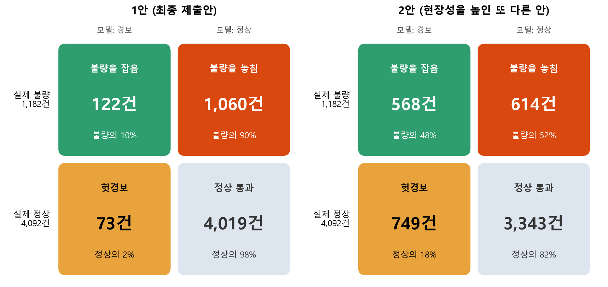

python main.py 한 줄, CPU 약 80초. 중간 리더보드 0.5987(공개 기준선 0.2517).1. 데이터 문제와 처리
| 문제 | 확인한 수치 | 처리와 이유 |
|---|---|---|
| 식별·상수 열 | shot_id·id·Shot 3개, Min/Max 상수 8개 | 제거(식별 열은 규칙상 특징 불가, 상수는 정보 없음). 32열 → 21열 + 표시 열 4개 = 25개 |
| 결측 | 공장 온도·습도 90행(전부 제품 유형 2, 두 덩어리) | 앞뒤 실측 30개씩의 중앙값으로 채움 + 결측 표시 열. 방식·창 크기 간 점수 차 0.004(표준편차 0.03 이내) |
| 이상한 값 | 속도 0·긴 사이클(설비 정지로 보임), 이상치 15행 | 지우지 않고 표시 열만 추가. 지워도 점수 차가 표준편차 안쪽 |
| 중복 행(쌍둥이) | 입력 21개가 앞 행과 같은 행 3,174개(42%), 같은 묶음 안 라벨 일치 97.8% | 행은 유지하고 묶음 번호를 검증 분할에만 사용(특징 아님). 시험 데이터도 58%가 같은 구조 |
| 클래스 불균형 | 정상 77.6%, 기타불량 76건·Stain 100건 | class_weight(balanced의 0.5제곱). 정확도가 아닌 macro F1 사용 |
| 제품·시기 교란 | shot 4208에서 제품 전환, 불량 종류가 제품·시기에 몰림(400샷 블록 불량률 1.8~51%) | 검증을 묶음·시간순으로 따로 측정(6절), 원인 분석은 제품 유형별로 수행(8절) |
2. 설계 카드 (MLP)
입력 25개 → 은닉 128 → 64 → 출력 7. 활성화 ReLU(비선형 표현), 드롭아웃 0.2(과적합 방지), 손실은 클래스 가중 교차엔트로피(희귀 불량을 놓치지 않게), Adam 학습률 1e-3(손실이 안정적으로 내려감), 가중치 감쇠 1e-4. epoch는 검증 손실이 최저인 18에서 멈춘다(그림 1). 입력은 학습 구간 평균·표준편차로 표준화.

3. 베이스라인 대조
| 모델 (쌍둥이 묶음 검증, 새 입력) | macro F1 | 비고 |
|---|---|---|
| 공개 기준선(로지스틱 + class_weight, 강사 제공) | 0.2517 | 리더보드 구조 |
| 로지스틱 / RF / HGB (잎 10) | 0.287 / 0.326 / 0.305 | 새 입력만 맞히는 어려운 검증 |
| MLP | 0.277(탐지율 54%) | 리더보드 구조에서는 0.289로 트리(0.58)보다 훨씬 낮음 |
MLP가 리더보드 구조에서 낮은 이유: 시험의 58%는 학습에 같은 입력이 있는데, 트리는 이를 외워 93%를 맞히고 MLP는 외우지 못한다. 새 입력에서는 MLP(0.277)와 트리(0.279)가 같다. 점수 차는 모델 품질이 아니라 "같은 입력을 외울 수 있는가"에서 나온다.
4. 비교 실험 3종 (한 번에 하나만 바꿈, 1안 대비 내부 점수 차이)
| 바꾼 것 | 결과 | 해석 |
|---|---|---|
| ① 앞뒤 사건 입력값 특징 (없음 → 40개) | +0.0045 (앞만 −0.0002, 뒤만 −0.0015) | 유일하게 일관된 이득. 앞뒤 샷의 공정 상태가 현재 샷의 불량과 이어진다고 해석. 라벨은 쓰지 않음 |
| ② 클래스 가중치 강도 (0.3 / 0.75 / 1.0, 기본 0.5) | −0.0002 / +0.0006 / −0.0007 | 노이즈 → 0.5 유지. 강하게 줄수록 탐지는 늘지만 헛경보도 늘어 점수는 그대로 |
| ③ 잎 크기 (최소 샘플 1 → 2) | 0.608 vs 0.610 | 동일 → 1 유지(탐지 57.4%, 정확도 87.2%) |
이 밖에 나무 수 900, max_features, 부트스트랩, 이웃 ±2~3, 시기 군집, 클래스별 탐지기, SMOTE식 보강, 이동평균 등 20여 가지를 시험했으나 모두 ±0.005 이내(시드 흔들림 0.005)였다. 시험 데이터 예측도 시드에 따라 평균 3행(0.1%) 넘게 바뀌지 않았다. 1안이 평평한 정점이다.
최종 모델 선택 근거: 1안과 2안(RF 잎1 + RF 잎6 확률 평균, 기타불량 ×1.5, 입력 25개)을 같은 학습 데이터 검증에서 비교했다. 최종 제출은 실제 리더보드(public) 점수 기준으로 1안(0.5987 대 0.5710)으로 정했다. 검증 수치는 이 선택의 한계를 확인하는 데 썼다. "새 입력"은 쌍둥이를 같은 쪽에 두는 5분할, "새 생산 구간"은 연속 100샷을 통째로 떼는 5분할이다(시드 7·123·2026 평균, 경보 기준 둘 다 ×1.0).
| 모델 | public 점수 (실제 제출) | 새 입력 F1 / 탐지율 | 새 생산 구간 F1 / 탐지율 | 놓침 / 헛경보 (public 크기 1,130샷 환산) | 구조와 용도 |
|---|---|---|---|---|---|
| 1안 (최종 제출안) | 0.5987 | 0.258 / 10.3% | 0.136 / 1.2% | 106 / 23 | 숲 6개·2단계·앞뒤 입력 65개. 채점 구조(쌍둥이 58%)에 맞음, 뒤 사건 입력이 필요해 사후 분석용 |
| 2안 (현장성을 높인 또 다른 안) | 0.5710 | 0.323 / 48.0% | 0.235 / 31.0% | 65 / 106 | 숲 2개·입력 25개. 불량을 적극 부름, 실시간 가능 |
리더보드 구조(시험의 58%가 학습에 같은 입력)에서는 외우는 능력이 점수를 가르므로 1안이 높고, 처음 보는 입력·새 생산 구간에서는 2안이 불량을 더 잡는다. 1안은 새 생산 구간에서 불량을 거의 못 잡는다(탐지율 1.2%). 불량을 구분하는 능력(AUC)은 두 모델 모두 0.74~0.75로 같고, public 차이 0.028은 private 표본 흔들림(SD 0.037) 안이다. 1안에 2안 확률을 섞어도 점수·정확도·새 입력 세 지표가 함께 오르지 않았고, 탐지 증가는 경보 기준 하나로 더 적은 손실로 얻는다(7절). 그래서 제출 CSV는 1안, 현장 운영 후보는 2안으로 구분한다.
5. 학습곡선 (데이터를 더 모아야 하는가)

결론: 데이터를 더 모으면 "이미 본 조건"의 점수는 오르지만 새 조건의 점수는 거의 안 오른다. 새 조건을 잡으려면 데이터 양보다 불량과 정상을 가르는 새 측정이 필요하다. 가정 기반 계산(불량 샷에서 평균 d 표준편차 높은 가상 측정을 추가, 실제 결과 아님): d=0.5는 점수 0.268→0.269로 변화 없고, d=1이면 0.297, d=2이면 0.400(탐지율 14%→41%). 구분력이 표준편차의 약 1배 이상인 측정을 찾아야 의미가 있다.
6. 분할 방식 비교 (어느 쪽이 배포 성능인가)

| 모델 | 무작위 80/20 | 쌍둥이 묶음 80/20 | 시간순 80/20 |
|---|---|---|---|
| 1안(최종 제출안) | 0.560 | 0.256 | 0.125 (탐지 0%) |
| 2안 (현장성을 높인 또 다른 안) | 0.504 | 0.338 | 0.111 (탐지 31%, 정확도 50%) |
외우는 1안은 무작위에서 부풀고 시간순에서는 "전부 정상"(0.125)에 가깝다. 2안은 시간순에서도 불량의 31%를 부르지만 헛경보가 많아 정확도 50%, F1 0.111로 1안과 같은 수준이다. 현장 배포 성능에 가까운 쪽은 시간순이다. 리더보드는 시험 샷이 생산 순서에 섞여 있어 무작위 쪽에 가깝다. 시간순 구간(shot 6009~7535)은 전부 제품 유형 2인데 학습에 이 제품이 1,269행뿐이라 "새 시기의 같은 제품"을 거의 못 본 시험이다. 그러므로 최종 점수(private 1,131행, SD 약 0.037)를 현장 성능으로 읽으면 안 된다. 연속 100샷 구간을 통째로 떼는 "새 생산 구간" 검증(4절 표)도 같은 결과다: 1안 F1 0.136·탐지율 1.2%, 2안 0.235(탐지 31%).
분할에 따라 모델 순위가 바뀐다: 무작위 분할과 실제 리더보드(public 1안 0.5987, 2안 0.5710)에서는 1안이 높고, 쌍둥이 묶음(새 입력)에서는 2안(0.34)이 1안(0.26)보다 높다. 시험 샷의 58%가 학습에 같은 입력이 있는 구조(private 58.4%, 입력으로 센 값)라 최종 채점도 이 구조에 가깝다고 보고, public 점수가 높은 1안을 택했다. 대신 새 입력 약점을 한계로 밝히고 운영안은 경보 기준으로 보완했다. private은 1,131샷이라 표본 흔들림이 SD 약 0.037이므로 점수 예측은 하지 않는다.

7. 운영 기준 (비용표)
가정과 출처. 하루 생산량은 계산했다: 사이클 시간 중앙값 22.6초, 24시간 가동이면 86,400÷22.6 ≈ 하루 3,800샷(가동 시간은 가정, 8시간 교대면 약 1,270샷). 불량률 22.4%(학습 데이터, 처음 보는 입력 기준)로 하루 불량 약 850건·정상 약 2,950건이다. 비용 비율은 현장 자료가 없어 가정한다: 헛경보(정상 샷을 불량으로 불러 재검사) 1건 = 1, 놓친 불량 1건 = 5·10·20. 부품의 안전 등급·보증/리콜·재검사 비용에 따라 현장마다 다르므로 기준안은 10:1(품질비용 이론의 "1-10-100 경험 법칙", 엄밀한 표준 수치는 아님)로 두고 5:1·20:1에서 결론이 유지되는지 본다. 결정 기준은 정상 확률에 곱하는 배율이다(작을수록 불량으로 더 자주 부름, main.py의 ALERT_NORMAL_SCALE). 건수는 학습 데이터 검증(처음 보는 입력, 시드 4개 평균이라 그림 4의 시드 3개 평균과 몇 건 다름)이며 리더보드 점수는 쓰지 않았다.
| 결정 기준 | 하루 검사 대상 | 놓침 | 헛경보 | 총비용 5:1 | 총비용 10:1 (기준) | 총비용 20:1 |
|---|---|---|---|---|---|---|
| 검사 안 함 | 0 | 852 | 0 | 4,258 | 8,516 | 17,033 |
| 정상 ×1.0 (제출 CSV 기준) | 154 | 759 | 61 | 3,856 | 7,650 | 15,239 |
| 정상 ×0.5 | 591 | 565 | 305 | 3,132 | 5,959 | 11,613 |
| 정상 ×0.3 | 1,179 | 371 | 699 | 2,556 | 4,413 | 8,127 |
| 정상 ×0.2 | 1,720 | 248 | 1,117 | 2,359 | 3,601 | 6,085 |
| 정상 ×0.1 | 2,575 | 87 | 1,810 | 2,244 | 2,677 | 3,543 |
| 정상 ×0.05 | 3,032 | 31 | 2,212 | 2,368 | 2,523 | 2,835 |
| 전수 검사 | 3,800 | 0 | 2,948 | 2,948 | 2,948 | 2,948 |
고른 운영안: 정상 ×0.1 (하루 2,575샷 검사, 놓침 87건, 헛경보 1,810건)
- 10:1 기준 최저는 ×0.05(2,523)이지만 검사 대상이 3,032샷(80%)이라, 최저와 6% 차이인 ×0.1(2,677, 검사 2,575샷 68%)을 골랐다. 전수 검사(2,948)보다 9% 싸다.
- 결론은 비용 비율에 민감하다. 5:1이면 ×0.1이 전수 검사보다 24% 싸서(2,244) 분명히 도움이 된다. 10:1이면 이점이 9~14%로 줄고 샷의 70~80%를 검사해야 한다. 20:1이면 ×0.1(3,543)은 전수 검사(2,948)보다 비싸고 ×0.05(2,835)도 4% 차이라 구별되지 않는다. 처음 보는 입력에서 불량을 구분하는 정보 자체가 약하기 때문이다(AUC 0.75).
- 그래서 놓침이 아주 비싼 현장보다 비용 비율이 낮은 현장, 같은 조건이 반복되는 라인(제출 CSV 기준 ×1.0이 가장 잘 맞는 구성)에 적합하다. 현장이 실제 비용 비율을 알려 주면 이 표에 대입해 운영 기준을 확정한다.
- 건수는 놓침·헛경보만 센 것이며 종류를 틀린 건과 종류별 비용 차이는 넣지 않았다.
- 제출 CSV(가장 높은 확률의 라벨, 정상 ×1.0)와 운영안은 다르다. CSV는 macro F1을 높이려는 7종 분류이고(×0.1로 낮추면 채점 구조를 반영한 내부 검증 점수가 0.62에서 0.49로 내려감), 운영안은 놓침 비용을 반영해 불량을 더 자주 부르는 기준이다. 보조로 위험(1−정상 확률) 순 상위 20~30%만 검사하는 방식도 있다(그림 5).
모델을 바꾸면 비용이 줄어드는가 (1,000샷당, 10:1 기준). 경보 기준이 같은 ×1.0이면 2안이 1안보다 35% 이상 싸 보인다(새 입력 1,307 대 2,024). 모델마다 기준을 따로 맞추면 차이가 사라진다.
| 모델 | ×1.0 비용 (새 입력 / 새 구간) | 자기 최저 비용 (새 입력 / 새 구간) | 최저일 때 기준 (새 입력 / 새 구간) |
|---|---|---|---|
| 1안 | 2,024 / 2,218 | 660 / 732 | ×0.05 / ×0.1 |
| 2안 | 1,307 / 1,664 | 684 / 738 | ×0.1 / ×0.2 |
| 전수 검사 | 776 (모든 샷 재검사) | ||
두 모델의 최저 비용은 4% 안이고(새 입력 660~684, 새 구간 732~738), 전수 검사보다 새 입력에서 12~15%, 새 구간에서 5~6% 싸다. 비용을 정하는 것은 모델 종류보다 경보 기준(비용 비율)이다. 5:1이면 1안은 588 / 650으로 절감 24% / 16%, 20:1이면 737 / 784로 전수 검사(776)와 5% 이내이거나 더 나쁘다. 그래도 2안은 입력 25개·숲 2개라 설명이 쉽고 뒤 사건 입력이 필요 없어 실시간 판정이 가능하므로 현장 운영 후보로 둔다. 기준을 현장 비율로 정하는 것은 같다.

8. 불량 원인 분석 (불량 유형 3종)
방법: 불량 종류마다 "그 종류인가 아닌가"로 RF를 따로 학습하고, 처음 보는 입력에서 순열 중요도로 중요한 조건을 뽑았다(그룹 CV AUC: Short_Shot 0.75, Blow_Hole 0.90, Exfoliation 0.83). 그 조건을 구간으로 나눠 구간별 불량률을 직접 셌고, 제품 유형이 불량 종류를 가르므로 유형별로 셌다. 괄호는 Wilson 95% 신뢰구간.

| 불량(대상) | 조건 구간 | 구간 안 | 구간 밖 | 구간 비중 |
|---|---|---|---|---|
| Short_Shot (유형 2, 2,324행) | High_Velocity > 2.537 | 5.3% (3.7~7.4) | 15.8% (14.2~17.6) | 24% |
| Blow_Hole (유형 2) | High_Velocity > 2.543 | 0.7% (0.2~1.9) | 12.3% (10.9~13.9) | 20% |
| Blow_Hole (유형 2) | Coolant_Temp ≤ 26.4 | 23.4% (20.0~27.3) | 6.2% (5.2~7.4) | 22% |
| Exfoliation (유형 1, 2,950행) | Spray_Time > 8.1 | 1.8% (1.2~2.7) | 9.8% (8.5~11.2) | 38% |
| Short_Shot (유형 1) | Melting_Furnace_Temp > 711 | 2.6% (1.7~4.0) | 6.4% (5.5~7.5) | 25% |
현장 제안: "유형 2 제품에서 High_Velocity를 2.537 초과 범위로 관리하면 Short_Shot이 15.8%에서 5.3%, Blow_Hole이 12.3%에서 0.7%로 줄 가능성이 있다. 유형 1 제품에서 Spray_Time이 8.1을 넘는 샷은 Exfoliation이 9.8%에서 1.8%였다."
- 구간 경계를 같은 데이터에서 골랐다. 따로 떼어 둔 확인용 데이터가 없어 실제 효과는 이보다 작을 수 있다.
- 센 것은 "그 구간에서 불량이 적었다"는 상관이다. 속도가 높은 샷은 금형 온도·작업 시기·설비 상태와 같이 움직였을 수 있다.
- High_Velocity 값은 몇 개의 값 덩어리로 뭉쳐 있어 설정 묶음의 표지일 수 있고, Spray_Time은 8.0~8.1만 높고 옆은 낮은 비단조 모양이라 우연이나 시기 영향일 수 있다. 환경 열(공장 온도·습도, 냉각수 온도)은 시기 표지일 가능성이 커 인과로 읽지 않는다(묶음 단위 분석에서 환경 열을 빼면 점수가 가장 크게 하락, −0.012).
- 확인 방법: 해당 변수만 구간 안팎으로 바꿔 시험 생산(A/B)하고 같은 제품·같은 시기에서 불량률을 비교한다. 그 전까지는 "관리 후보"로만 쓴다.
9. 현장 언어로 번역
- 새로운 조건의 샷(학습에 같은 입력이 없음): "불량 100건 중 약 10건을 잡고 90건을 놓칩니다. 정상 100건 중 약 2건을 불량이라 울립니다. 울린 경보 195건 중 122건(63%)이 진짜 불량이었습니다." 1,000샷으로 환산(불량 22.4%)하면 불량 224건 중 23건을 잡고 정상 776건 중 14건에 헛경보.
- 이미 본 적 있는 조건이 다시 나오면: 불량 100건 중 58건을 잡습니다(시험 샷의 약 58%가 이 경우).
- 불량 종류별(새 입력, 종류까지 맞힘, 그림 5의 한 번 실행 기준): Stain 100건 중 29건, Deformation 106건 중 21건, Blow_Hole 233건 중 18건, Exfoliation 198건 중 12건, Short_Shot 469건 중 12건, 기타불량 76건 중 0건.
- "불량을 너무 많이 놓치는 것 아닌가": 맞다. 새 입력 기준 1안은 불량 1,182건 중 1,060건(90%)을 놓친다(그림 4). 정확도 79%는 정상이 78%라 "전부 정상"으로 답해도 나오는 값이라 착시다. 원인은 입력값만으로 불량을 가르는 정보가 약해서이며(AUC 0.74~0.75, 시험한 모든 모델이 같음), 2안도 52%를 놓친다. 같은 입력이 학습에 있는 샷(시험의 약 58%)에서는 약 58%를 잡는다. 대응은 두 가지다. ① 같은 1안에서 경보 기준만 낮춘다(정상 ×0.1이면 새 입력 불량의 약 90%를 잡지만 정상의 약 61%에 헛경보, 검사 대상은 전체의 약 2/3). ② 앞 사건만으로 실시간 판정이 필요하거나 설명이 우선이면 2안을 쓴다(4·7절). 놓침·헛경보 중 무엇이 비싼지는 현장 비용 비율이 정한다.
- 그래서 "불량이다/아니다" 자동 판정 대신 "위험 순위 상위 20%를 먼저 검사"로 쓰는 것을 권한다(7절). 정확도 87%는 정상이 77%라 의미가 작아 단독으로 말하지 않는다.
10. AI 사용과 AI가 틀린 것
AI(Claude)를 코드 작성·실험 설계·결과 해석 보조에 사용했고, 숫자는 모두 직접 실행해 확인한 값만 보고서에 썼다. 무엇을 물었고 무엇을 검증해 기각했는지:
| AI 조언 | 검증 결과 |
|---|---|
| "쌍둥이의 라벨을 그대로 찾아 쓰면 0.65~0.70까지 오른다" | 모의 계산으로 약 0.58에 그침(직접 계산해 기각). 규칙상 이웃 라벨은 쓸 수도 없어 이웃 입력만 특징으로 채택 |
| "내부 점수(리더보드풍)가 리더보드를 예측한다" | 1안은 어림 0.623 대 실제 0.5987로 0.024 높았고 2안은 약 0.02 낮아 오차 방향이 모델마다 달랐다. 낙관 편향을 보정해 해석하고, 내부 점수로 순위를 예측하지 않음 |
| "이동평균·순번 특징·클래스 보정으로 +0.005" | 시드·표본 흔들림(0.005~0.03)보다 작거나 규칙 회색지대라 채택하지 않음. 순위 예측("상위권")도 근거가 없어 철회 |
| "탐지율을 올리면 점수도 오른다"(잎 3·5, SMOTE식 보강) | 탐지율 63~67%로 올랐지만 점수는 0.6125→0.6033 등으로 내려감. 헛경보가 늘어 정확도·정밀도가 깎임(맞바꿈) |
| "정상 확률에 ×0.3~0.4를 곱하면 0.6을 넘는다"(다른 AI 제안) | 새 입력만 보면 F1 0.25→0.335로 맞지만 리더보드풍은 0.623→0.599(×0.4)·0.580(×0.3)로 내려갔고, 선택·평가를 분리해도 평균 −0.002라 점수용으로 기각. 운영안(놓침 비용 반영)에서만 사용 |
| "다른 구성의 모델과 섞으면 새 입력·탐지율·정확도가 함께 오른다" | 1안에 비교 모델 확률을 15~50% 섞어 보니 탐지율은 오르지만 정확도와 점수는 같거나 내려가 세 지표를 동시에 올리는 조합은 없었음(맞바꿈) |